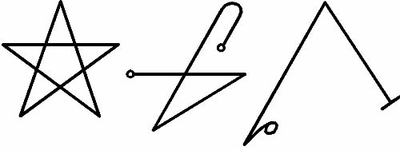

Bu, MASSHU’nun üç mührüne sahip olduğum yıllarda gördüklerimin ve öğrendiklerimin tanıklığıdır. Bin bir ay gördüm ve bu, bir insanın, Peygamberlerin daha çok yaşadığı söylense de, kısa ömrü için yeterlidir. Ben güçsüzüm ve hastayım ve büyük bir yorgunluk, bitkinlik taşıyorum ve iç çekişler, karanlık bir fener gibi göğsümde asılı duruyor. Yaşlıyım.
Kurtlar gece yarısı konuşmalarında benim ismimi taşırlar ve bu suskun, anlaşılmaz ses beni uzaklardan çağırır. Ve çok daha yakınlardaki bir ses, habis sabırsızlığıyla kulağımın içine haykırır. Ruhumun ağırlığı, dinleneceği nihai yere karar verecek. Bu zamandan önce, buraya dışarıda azametle yürüyen ve her insanın kapısında bekler halde yatan korkularla ilgili her şeyi buraya yazmalıyım, çünkü bu eskinin kuşaktan kuşağa geçen, ama Kadimler’e (onların isimleri karalansın!) tapan çok az insan dışında unutulan kadim sırrıdır.
Ve ben bu görevi bitiremezsem, buradakileri al ve geri kalanını kendin keşfet, çünkü zaman kısa ve insan türü her yönden, her kapıdan, her yıkık bariyerden, deliliğin sunaklarında duran akılsız yardakçılardan gelecek, kendisini bekleyen kötülüğü ne biliyor ne de anlıyor.
Çünkü bu ölülerin kitabıdır, IGIGI’nin düzlüklerinde hayatımı tehlikeye atarak, ıssızlıkların gezginleri dışındaki gaddar göksel ruhlardan onu alır almaz yazmaya başladığım, Kara dünyanın kitabıdır.
Bu kitabı okuyan herkes, insanın meskeninin zamanın başlangıcından önceki bir zamanda tanrıların ve demonların şu Kadim ırkı tarafından görüldüğü ve teftiş edildiği ve insanın yaratılışından önce, Yaşlı Tanrılar, Kaldeliler tarafından bilinen şekliyle, MARDUK’un ve Majisyenlerin Tanrısı EFENDİMİZ ENKI’nin ırkı uzayda yürüyorken, Dünyaları birbirinden ayıran, kozmosun bir yerinde meydana gelen unutulmuş savaşın intikamını almak istedikleri konusunda uyarılsın.
Bil ki, öyleyse, bütün Tanrı kuşaklarına ve aynı zamanda Azonei’nin mekanlarına ayak bastım ve ölümün ve sonsuz susuzluğun, GANZIR’in, Babil inşa edilmeden önce UR’da yapılan kapıdan ulaşılan pis mekanlarına indim.
Bil ki, isimleri insan toplumlarınca artık bilinmeyen ya da asla bilinmemiş olan her tavırdaki ruh ve demon ile konuştum. Ve bunlardan bazılarının mühürleri burada yazılmıştır. Buna rağmen diğerlerini, seni terk ettiğimde yanımda götürmem gerekiyor. ANU ruhuma merhamet et!
Hiçbir haritanın göstermediği, bilinmeyen ülkeleri gördüm. Çöllerde ve ıssız topraklarda yaşadım ve demonlarla, boğazlanmış insanların ruhlarıyla ve doğum yaparken ölen kadınlarla, dişi hayalet LAMMASHTA’nın kurbanlarıyla konuştum.
Efendimizin sarayını arayışımda denizlerin altında yolculuk ettim ve kaybolmuş uygarlıkların anıtlarının taşlarını buldum ve bazılarının yazılarını deşifre ettim, diğerleri ise yaşayan her insana hala sır olarak kaldı. Ve bu uygarlıklar bu kitabın içindeki bilgi yüzünden yok edildi.
Yıldızların arasında yolculuk ettim ve Tanrıların önünde korkudan titredim. En sonunda, ARZIR’in kapısından geçmenin formüllerini buldum ve kötü IGIGI’nin yasak krallıklarına geçtim.
Demonları ve ölüleri uyandırdım.
Yıldızlara ulaşmak ve HADES’in çukurlarının en dibine dokunmak için inşa edilmiş Tapınakların tepesinden, gerçeğe ve görülebilir olana çağırdım atalarımın ruhlarını. Kara majisyen AZAG-THOTH ile güreş tuttum beyhude yere ve INANNA’ya ve kardeşi MARDUK’a, çift yüzlü BALTA’nın Tanrısına yakararak Dünya’ya firar ettim.
Hayaletler sürüsünü çağırarak Doğunun ülkelerine karşı orduları ayaklandırdım kendime tebaa yaptım onları ve bunu yaparak kafirlerin Tanrısı, ateşler üfleyen ve bin yıldırım gibi kükreyen NGAA’yı buldum.
Korkuyu tanıdım.
Kadimlerin dünyamıza giriş için durmaksızın aradığı, nöbet tuttukları, dışarıya açılan kapısını buldum. Kadimlerin, isimleri, rahiplerinin, güç ararken dehşet dolu, şer kapısını ardına kadar açarak bir saat içinde yok olan bazı ölü uygarlıkların vasiyetnamesi, berbat MAGAN metninde yazılı o Kadimin, Dışarının Kraliçesi’nin buharlarını kokladım.
Grekler tarafından Mezopotamya denilen yerdeki cahil bir çobanın oğluyken, çok özel koşullar ile bu bilgiye sahip olmak için geldim.
Delikanlılık çağımda, Doğu’ya uzanan, orada yaşayan insanların MASSHU dedikleri dağlar boyunca bir başıma yol alırken, üzerine üç garip sembol oyulmuş olan gri bir kayaya rastladım. Bir insan boyunda, bir boğa enindeydi. Sapasağlam duruyordu, hareket ettiremedim. Düşmana karşı kazanılan kadim bir zaferi göstermesi için bir kral tarafından yapılmış bir eser olabileceği dışında, üzerindeki oymaları daha fazla düşünmeden, beni oralarda başıboş dolaşan kurtlara karşı koruması için kayanın hemen ayakucunda bir ateş yaktım ve uykuya daldım, çünkü geceydi ve Bet Durrabia adındaki köyümden uzaktaydım. Shabatu’nun on dokuzunda, şafağın sökmesine üç saat kadar vardı ki bir köpeğin, belki de bir kurdun, alışılmadık şekilde güçlü ve yakından gelen ulumasıyla uyandım. Ateş köze dönmüştü ve bu kızıl, ışıldayan kömür parçalarından üç oymalı taştan anıtın üzerine soluk, dans eden gölgeler vuruyordu. Ben, yeni bir ateş yakmak için acele ederken, gri kaya parçası, sanki bir güvercinmiş gibi, yavaşça havaya yükselmeye başladı. Belkemiğimi kavrayan ve soğuk parmaklarıyla kafatasımı saran korku yüzünden ne hareket edebildim ne de konuştum. Azug-bel-ya’nın Dik’i bana, göründüğünden daha yabancı olmamıştı, ilki ellerimde eriyor görünse de!
Biraz sonra, uzaktan gelen, yumuşak, haydutlara ait olma ihtimali, daha yüzeysel bir korkuya kapılmama neden olan bir ses duydum ve titreyerek, yabani otların arasına yuvarlandım. İlk sese başka bir ses eklendi ve az sonra, hırsızlara ait siyah giysileri içinde birkaç adam, olduğum yerin yakınında, en ufak bir ürkeklik belirtisi sergilemeden, havada yüzen kayanın etrafını sararak bir araya geldi.
Kayanın üzerindeki üç oymanın, sanki kaya yanıyormuş gibi alev kızıllığında parıldadığını açıkça görebiliyordum. Figürler, yalnızca birkaç kelimesinin duyulabildiği, bilinmeyen -her ne kadar, ANU ruhuma merhamet etsin!, bu ritüeller bana artık bilinmez gelmese de- bir dilde dua ya da yakarılar mırıldanıyorlardı.
Yüzlerini ne görebildiğim ne de tanıyabildiğim figürler havada kılıçlarıyla, dağ gecesi içinde soğuk ve keskince parıldayan vahşi hamleler yapmaya başladılar.
Yüzen kayanın altından, kayanın önceden durduğu yerden bir yılan kuyruğu yükseliyordu. Bu yılan, gördüğüm diğerlerinden kesinlikle daha genişti. En ince kısmı iki adamın kollarının birleşmiş hali kadar vardı ve yükseldiği zaman, ilkinin sonunun çukurun içine ulaştığı daha görülmeden, onu bir ikincisi takip ediyordu. Bunlar da başkaları tarafından takip ediliyordu ve yer, bu muazzam kolların basıncı altında sarsılmaya başladı. Rahiplerin -rahipler diyorum çünkü gizli bir gücün hizmetçileri olduklarını anlıyordum- söylüyor olduğu büyülü şarkı daha güçlü ve neredeyse histerik bir hale geldi.
IA! IA! ZI AZAG! IA! IA!! ZI AZKAK! IA! IA! KUTULU ZI KUR! IA!
Saklandığım yer, şahit olduğum sahnenin yaşandığı yerden bayır aşağı akan bir madde yüzünden yavaşça ıslanıyordu. Islaklığa dokundum ve bunun kan olduğunu gördüm. Korku içinde çığlık attım ve varlığımı ele verdim. Bana doğru döndüler ve kayayı kaldırdıkları hançerlerle -kanın bu ruhların en önemli besini olduğunu, ki onlarca savaştan sonra savaş alanının doğal olmayan bir ışıkla parlaması, orada beslenen ruhların tezahüründen dolayıdır, şimdi bilmeme rağmen, o an için sezemediğim mistik bir amaçla- göğüslerini kestiklerini tiksinerek gördüm.
ANU hepimizi korusun!
Çığlığım ritüellerini kaos ve düzensizlik içine sokma etkisi göstermişti. Gelmiş olduğum patika boyunca var gücümle koştum ve bazılarının, belki de ritüelleri bitirmek için orada kalmalarına karşın, rahipler de koşarak peşimden geldiler. Soğuk gecede, yamaçtan aşağı vahşice koştukça, kalbim göğsümden fırlayacak gibi atıyor ve başım gittikçe ısınıyordu, parçalanan kayaların ve yıldırımların sesleri ardımdan geliyor ve koştuğum toprağı sarsıyordu. Telaş ve acele içinde yere düştüm.
Silahsız olmama rağmen, kalkarak, bana saldıran her neyse yüzleşmek için ondan tarafa döndüm. Şaşkınlık içinde, gördüğüm ne kadim korkunun bir rahibi, ne de şu yasak sanatın icracılarından bir ölülerle konuşan (Necromancer) değildi, yalnızca siyah giysilerin altlarında herhangi bir yaşamın veya bedenin varlığı görünmeksizin çimenlerin ve yabani otların üzerine düşüşünü gördüm.
Birincisine doğru ihtiyatla, yürüdüm, ince bir dal alarak giysiyi yabani otların ve dikenlerin dolaşıklığından kurtararak kaldırdım. Rahipten geriye kalan tek şey yeşil bir yağa benzeyen ve uzun süre güneşin altında çürümeye yatan bir bedenin kokusuna sahip bir sümük havuzuydu. Böylesine pis bir koku beni neredeyse alt etmişti, ama yine de diğerlerini bulmak, aynı kaderin diğerlerinin de başına gelip gelmediğini görmek için azmettim.
Birkaç dakika önce korku içinde koşarak indiğim yamacı çıkarak, ilkiyle özdeş durumda olan karanlık rahiplerden bir diğerine rastladım. İlerledikçe daha fazla giysiyi geride bırakıp, artık onları ters çevirmeye cesaret edemeyerek yürümeye devam ettim. Ardından, en sonunda, rahiplerin kumandası altında doğal olmayan bir biçimde havaya yükselen gri kaya anıtına geldim. Bir kez daha toprağın üzerindeydi, ama üstündeki oymalar hala doğaüstü bir ışıkla parlıyordu. Yılanlar ya da yılan olduğunu düşündüğüm şeyler yok olmuştu. Ancak ateşin, artık soğuyan ve kararan, ölü közlerinde bir metal levha parlamaktaydı. Onu aldım ve onun da, taş gibi, ama bir dereceden sonrasını anlayamadığım karmakarışık bir biçimde oyulmuş olduğunu gördüm. Taş ile aynı işaretleri taşımıyordu, sanki bir zamanlar bildiğim ama uzun zamandır unuttuğum bir dil gibi, karakterleri neredeyse okuyabileceğim hissine kapıldım, ama yapamadım. Ay ışığı muskanın üzerine vurduğunda, başım sanki bir iblis kafatasıma vuruyormuş gibi ağrımaya başladı, çünkü onun ne olduğunu biliyordum ve kafamın içinde bir ses belirdi ve bana bu şahit olduğum sahnenin sırlarını bir kelime ile söyleyiverdi:
KUTULU.
O anda, kulağımın içine şiddetle söylenmiş gibi, anladım.
Bunlar dışarıya açılan kapı olan gri kayanın üzerine oyulan işaretlerdi:
